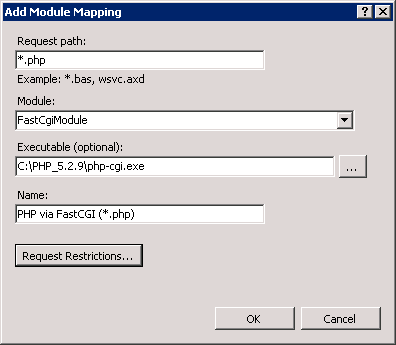

Run PHP 4.x and 5.x runtimes simultaneously on IIS 7
Translations:
Summary
To provide PHP 4.x / 5.x runtime support on Microsoft Internet Information Services 7.0 (x86 and x64), you configure both versions of PHP manually on a server, update Internet Information Services 7.0 service provider settings in WebsitePanel and setup a new hosting plan or update an existing one making PHP 4.x / 5.x runtimes are available to the customers.
Note: The guide assumes you have PHP 5.x and 4.x already installed and configured on the server.
To download PHP 4.x, visit http://www.php.net/releases/ and choose the version (ZIP package) you're going to provide to your clients. This scenario has been tested successfully on PHP 5.2.9 and PHP 4.4.9/4.4.8 versions.
1. Here are two versions of PHP runtime installed on a server as shown on the picture
Hint: Do not use spaces in the folder name when installing the runtime
2. Run Registry Editor (regedit.exe), navigate to "HKEY_LOCAL_MACHINE\SOFTWARE" path (or "HKEY_LOCAL_MACHINE\Wow6432Node\SOFTWARE" on x64 platform) and ensure that PHP exists there. In case if it does not exist then create it as shown on the picture
3. Create setting IniFilePath (String Value) beneath PHP key and specify path to php.ini file that PHP 4 runtime should use to instantiate itself and process scripts, for example IniFilePath=C:\PHP_4.4.9
4. Next beneath "HKEY_LOCAL_MACHINE\SOFTWARE\PHP" key, create a key with the name of major PHP version, for example 5.2.9
5. Afterwards beneath the key has been added, create setting IniFilePath (String Value) and specify path to php.ini that PHP 5 rutime should use to instantiate itself and process scripts, for example IniFilePath=C:\PHP_5.2.9

6. As soon as you have done with all of the steps outlined above, run iisreset from the command line
7. Create two web sites to test both versions of PHP runtime
8. Add corresponding handler script mappings for both PHP 5.x and 4.x demo web sites and click Yes button when prompted about adding PHP runtime in ISAPI and CGI Restrictions allowance list

9. Then it is necessary to confirm that both versions of PHP runtime work as expected. In order to confirm that you create phptest.php with the following content <?php phpinfo(); ?>. File must be saved in a web site's root folder you are going to test PHP at

10. Here is an example screenshot for the web site with PHP 4.4.9 version configured
11. Here is an example screenshot of PHP 5.2.9 web site running made on the same server that runs PHP 4.4.9 as well